I enjoy working where epic storytelling, visual art, and profound human connection overlap.
I like turning complicated societal themes into heroic journeys that feel exciting, relatable, and timeless. Excelsior!
Let's build a universe ↗Hello, true believers, I'm
I architect sprawling universes and craft high-impact mythological characters that blend human flaws with spectacular superpowers.
Creative Vision
Bridging the gap between everyday human struggles, extraordinary abilities, and dynamic visual storytelling.
Explore the Universe ↗A little about me
I enjoy working where epic storytelling, visual art, and profound human connection overlap.
I like turning complicated societal themes into heroic journeys that feel exciting, relatable, and timeless. Excelsior!
Let's build a universe ↗Architecting iconic, flawed heroes using relatable struggles, secret identities, and spectacular powers.
Crafting interconnected universes where every story, city, and character serves a larger narrative tapestry.
Merging collaborative plotting with dynamic comic art to bring static pages and ink to life.
=======I'm Adithya K S, an Integrated MCA student exploring software development, cybersecurity and artificial intelligence through practical projects and continuous learning.
>>>>>>> 4e53a02 (feat: complete Nuance-inspired personal portfolio for Adithya K S)Projects
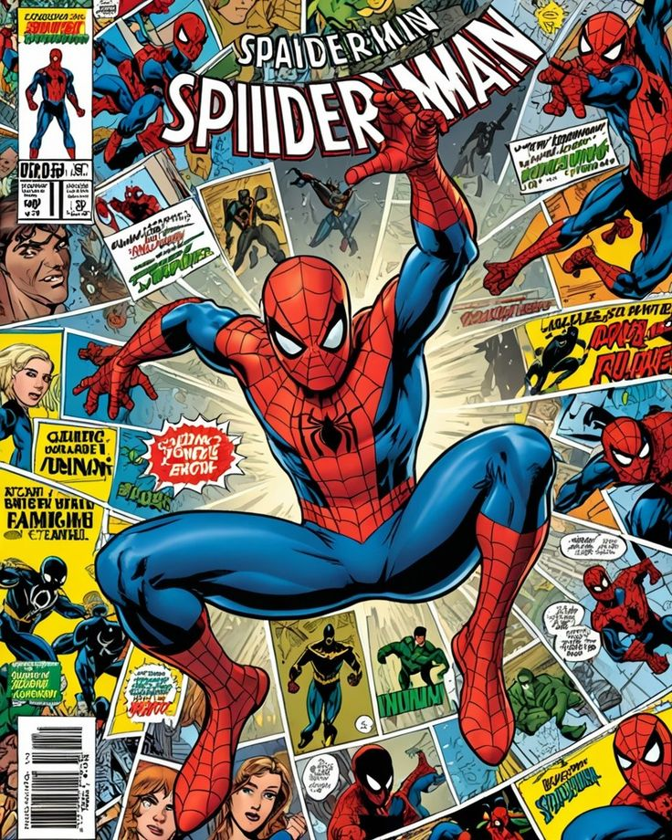
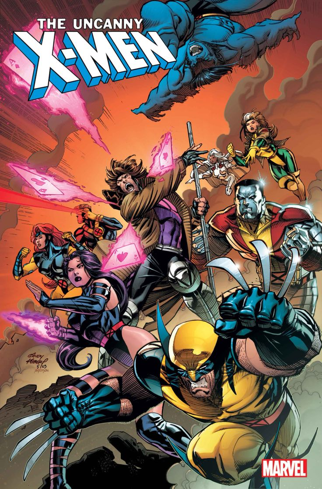
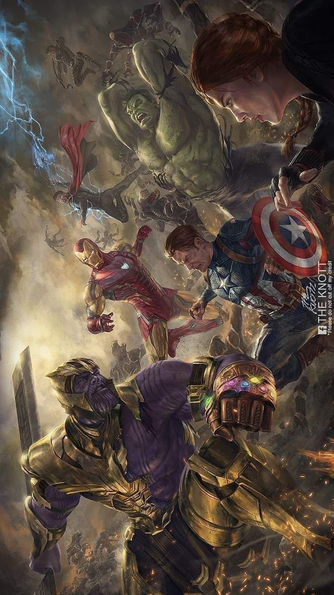
My toolkit
A multidisciplinary mindset focused on breaking down complex digital mechanisms into understandable, well-built software.
I am an Integrated MCA student interested in understanding how technology works and how it can solve real-world problems.
My learning journey spans programming, software development, networking, cybersecurity and artificial intelligence.
Rather than limiting myself to theoretical learning, I explore ideas by building practical applications, experimenting with technologies and developing independent projects.
Enrolled in the 5-year integrated Master of Computer Applications program at De Paul Institute of Science and Technology.
I am actively expanding my capabilities every day. Instead of superficial buzzwords, I prioritize clean architectural fundamentals: understanding memory, socket communication, heuristic detection, and modular clean code.
Elected President of the Rotaract Club (De Paul Institute, 2026–27). Fostering collaborative environments, managing community projects, and communicating technical ideas across diverse teams.
Visuals
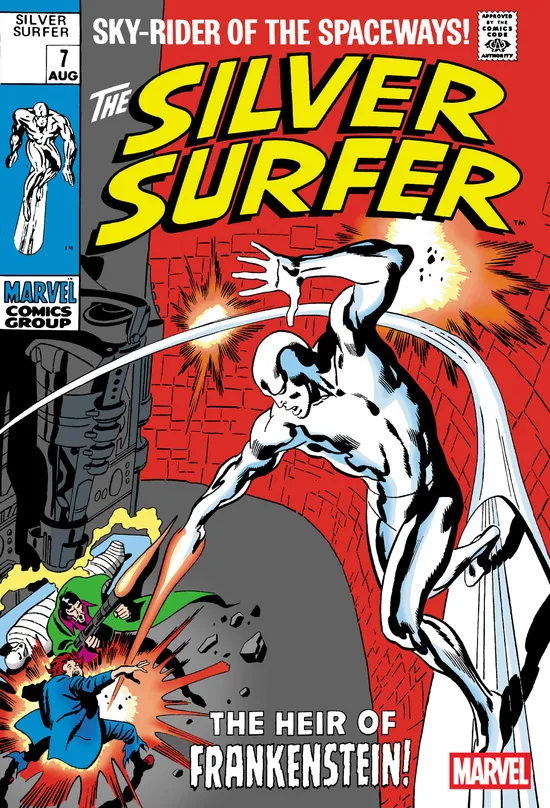
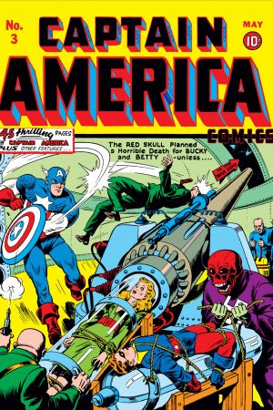
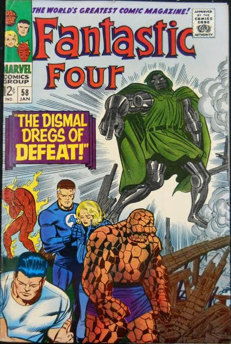
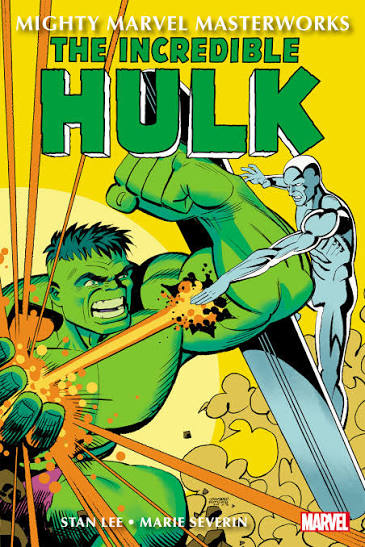
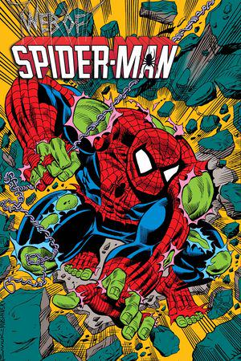
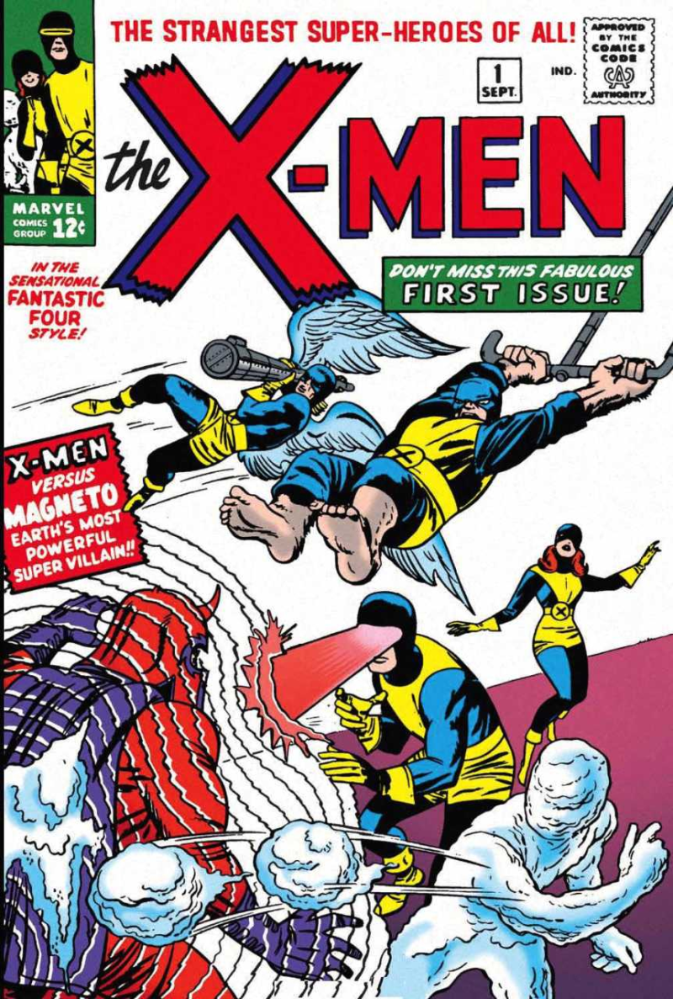
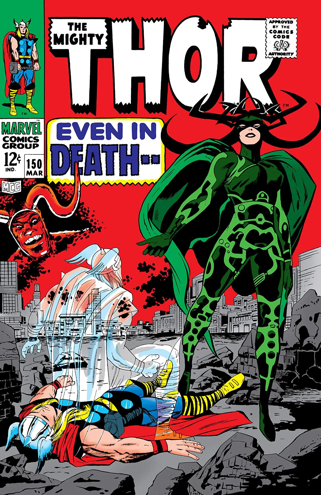
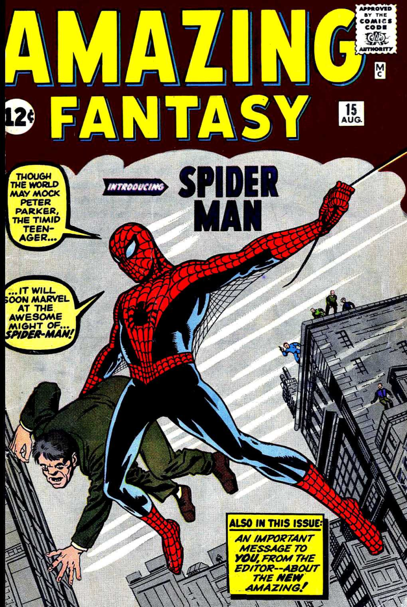
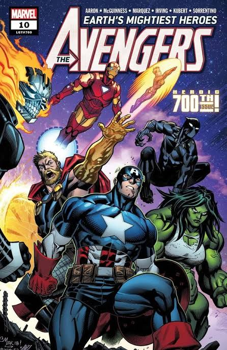
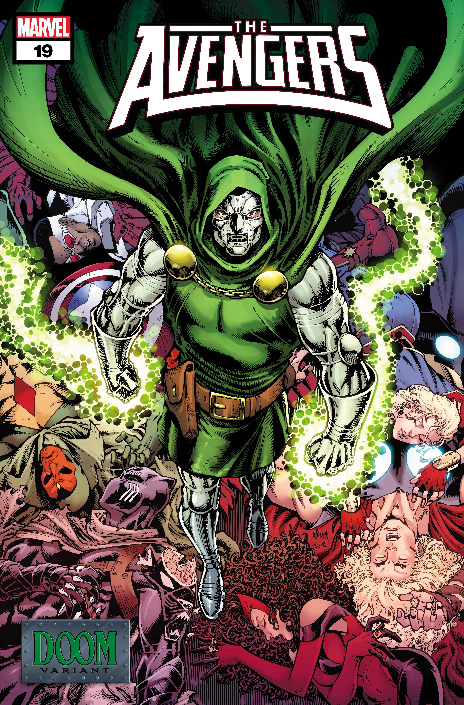
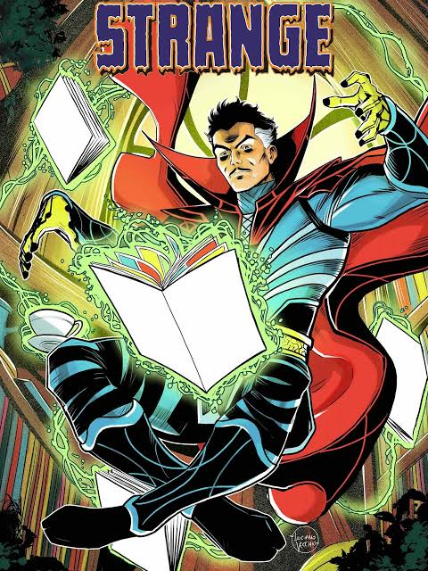
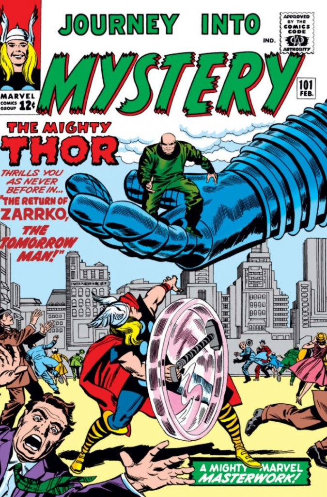
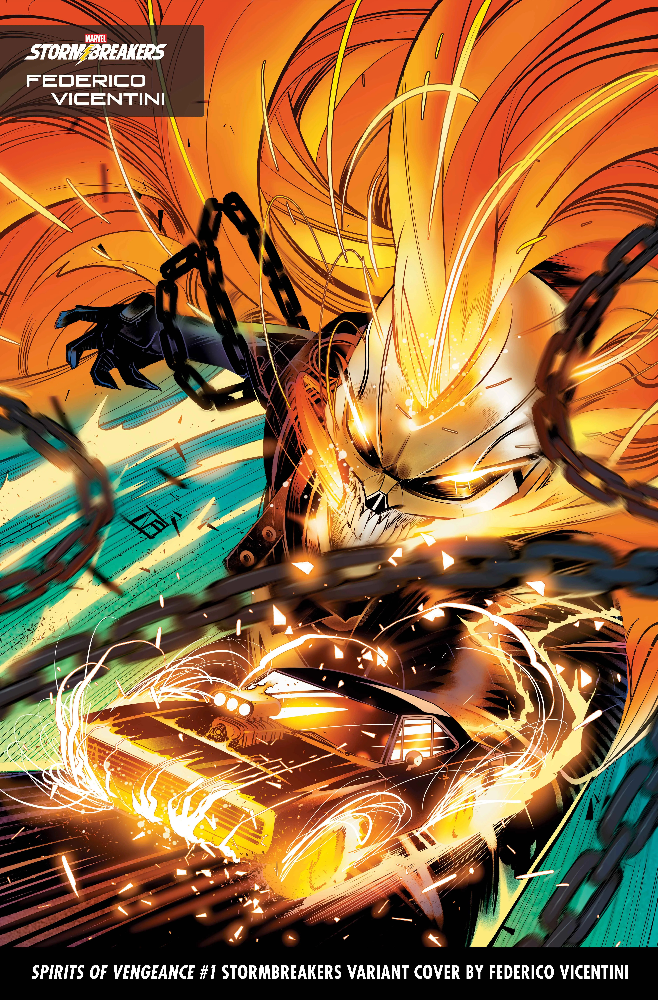
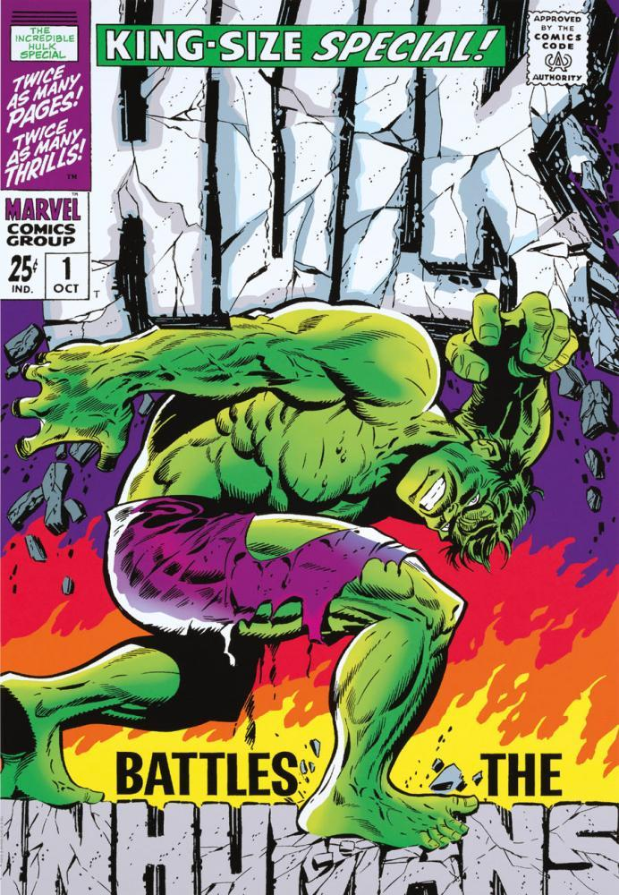
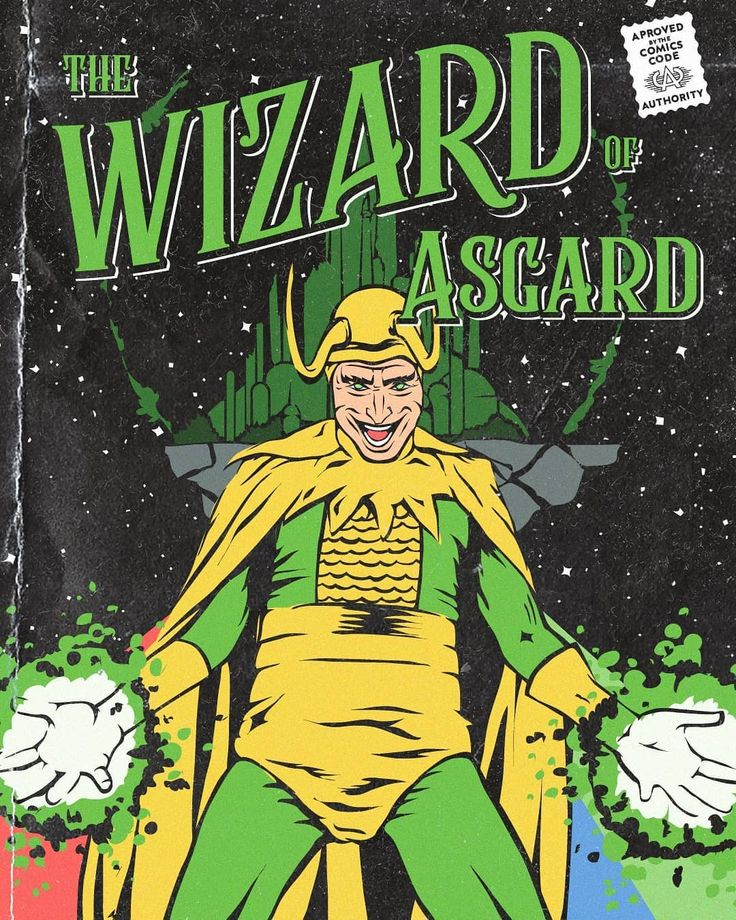
Real implementations exploring defensive cybersecurity, networking utilities, developer tooling, and educational software.

A developing cybersecurity-focused Windows analysis application designed to inspect system processes, network socket activity, startup behavior, and potential security exposures in real time.

A lightweight command-line network utility engineered for common port discovery, CIDR validation, raw socket inspection, latency measurement, and automated risk scoring across quick and deep scanning modes.

A Visual Studio Code extension providing automated code critique, security linting, and developer feedback with customizable review personalities, powered 100% locally through Ollama and Llama 3 models without sending source code to third-party clouds.

An interactive educational technology platform designed to deliver structured computer science concepts, networking protocol visualizers, interactive labs, and practical programming challenges.

A Chromium browser extension analyzing visited web pages for deceptive URLs, typosquatting entropy, certificate issuer integrity, and suspicious credential input forms to deliver instantaneous SAFE, WARNING, or DANGER classifications.

A location-centric media tool developed to organize, verify, and visualize geotagged photographs through embedded EXIF coordinate parsing and interactive Google Maps pin integration.
Guiding the creative direction of a sprawling universe and defining the modern comic book industry at Marvel Comics.
Developing early concepts, writing text fillers, and laying the groundwork for a storytelling revolution at Timely Comics.
Questions
I use "The Marvel Method." I write a brief synopsis, give it to the artist to draw the pacing and action, and then I add the dialogue, sound effects, and captions afterward.
If a character is perfect, they're boring. A hero who struggles to pay rent, gets sick, or deals with prejudice is someone the reader can actually relate to.
Interconnectivity is a priority. I incorporate crossovers, shared cities (like placing everyone in real-world New York), and overlapping consequences to ensure the universe feels alive and cohesive.
=======Three independent scrolling streams categorizing languages, frameworks, and engineering tools actively practiced.
Disciplined knowledge areas organized by applied domain rather than arbitrary percentage metrics.
Foundational and multi-paradigm programming for scripts, systems, and algorithms.
Accessible semantic markup, responsive layouts, and backend API routing.
Data modeling, relational schema design, procedural queries, and document stores.
Network layers, packet flow, socket states, and protocol inspection.
Defensive security exploration, vulnerability vectors, and traffic inspection.
Version control workflows, local AI inference, virtualization, and development suites.
Open to collaborations, interesting projects, and conversations.
stanlee@marvel.com ↗ =======Formal computer applications education paired with active community leadership.
Five-year comprehensive program bridging core computational theory, algorithms, software engineering, databases, system architecture, and modern computer applications.
Elected to direct collegiate community initiatives, lead youth service activities, manage cross-functional student teams, coordinate institutional events, and champion technical outreach programs.
Earned credentials through recognized platforms alongside ongoing self-directed study.
Instruction engineering, zero/few-shot prompting paradigms, context window structuring, and model alignment strategies.
Foundational cybersecurity modules, technology problem-solving practices, and computational fundamentals.
Network topology, subnets, packet routing, ethernet standards, and TCP/IP protocol stack fundamentals.
I'm open to discussing software projects, learning opportunities, and collaborative technology initiatives.
Feel free to connect directly through professional profiles or send a direct inquiry. I value thoughtful conversations about software engineering, cybersecurity, and open-source tooling.